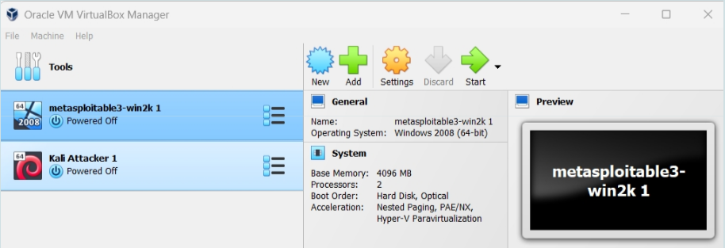
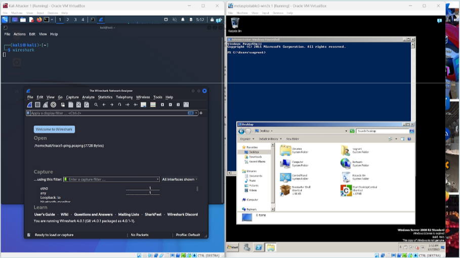
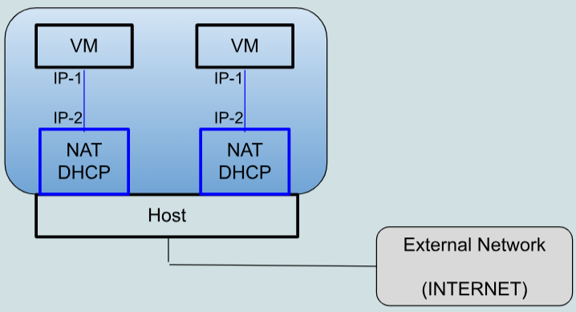
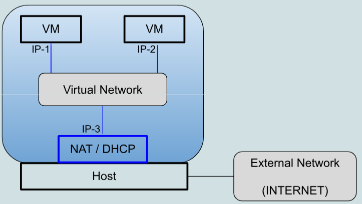
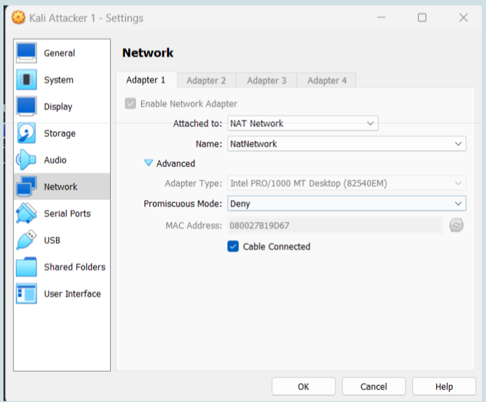

Lab Virtual Machines
A virtual machine (VM) is a computer emulated in software. This computer has a filesystem, RAM memory, keyboard, network interfaces and so on. All these resources are emulated in software by a dedicated program called hypervisor. The hypervisor runs on a (real) computer. VirtualBox, discussed in more detail below, is a freely available hypervisor that can run on Windows, Linux, MacOS.
A VM runs an operating system, like any other computer. Creation, bootstrap and shutdown of a VM is done through the hypervisor.
For example, you could run VirtualBox on Windows and then have a Linux VM running on that VirtualBox. You could have many VMs defined in VirtualBox and run them at different times. You may also run several VMs simultaneously, the performance being obviously limited by the hardware resources of the machine that runs the hypervisor.
Before creating a VM you need a file in ISO format containing the installation image of an operating system. This file must be stored on the machine where the hypervisor runs. The first time you launch the VM you install the operating system on that VM from this image.
While a VM is running, its screen will be shown in a window of the machine where the hypervisor runs. Upon a bootstrap, all the permanent state of the VM (files, configurations) will be the same as it was upon the last shutdown.
The filesystem of a VM, as well as any secondary storage required by its operating system, is stored on the filesystem of the machine that runs the hypervisor, in a (large) file managed by the hypervisor itself.
Resources of VMs are fully isolated from each other, like real machines. For example, a malware on a VM may encrypt the entire filesystem of that VM; it cannot operate on files of other VMs or on files of the machine that runs the hypervisor. The technical details for ensuring this isolation, implemented through the hypervisor, are very complex.
Each VM is called “guest”; the physical machine that runs the hypervisor is called “host”.
 VirtualBox. Two VMs defined, both not running.
 Two VMs running on a Windows PC. Kali VM on the left (desktop shows a shell window and a Wireshark window), Metasploitable3 Windows Server 2008 on the right (desktop shows a shell window and a file explorer window).
Networks in VirtualBox
In VirtualBox each VM can have up to 4 network interfaces. The VMs defined in a given VirtualBox installation can be organized in many different networking architectures, by associating each network interface with one of the available networking modes. This operation is done through the “Network settings” of the VM.
By default, a VM uses one network interface in the VirtualBox “NAT mode”. In this way:
- The VM has a private IP address, dynamically allocated by a DHCP server implemented by VirtualBox.
- The VM has client access to the host and to the external network, through a NAT module implemented by VirtualBox.
- Server access to the VM is possible by enabling port forwarding in the NAT module of VirtualBox.
- VMs cannot communicate between themselves.
 _NAT mode (default). All VMs are given the same IP address and the respective default gateways all have the same IP address. Port forwarding defines whether a given port number is managed by the host or by one of the VMs. Port forwarding is defined in the network settings of each VM rather than globally. If a given port number is forwarded to multiple VMs then malfunctioning will occur (usually the traffic will reach only the VM that starts first). _
The network interface of a VM can be configured in the “NAT network mode” and several such “NAT networks” can be defined. The only difference w.r.t. to the previous case is that all the VMs in the same “NAT network” can communicate between themselves. This is the network configuration suggested for the activities in this document.
  Network settings of the Kali VM. Those of the metasploitable3 VM are identical.